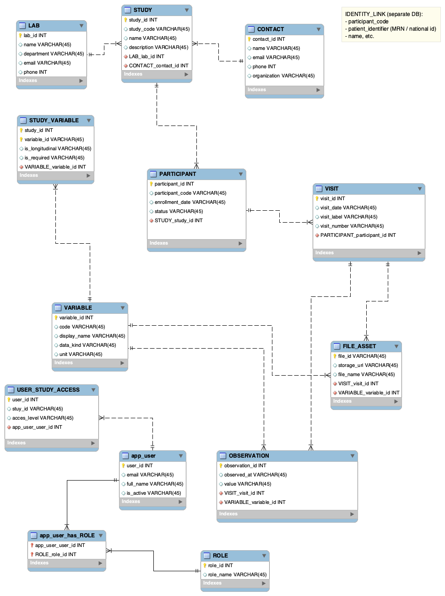

A production-grade relational data model for managing hospital clinical trials, built around pseudonymised participants, longitudinal visit data, flexible per-study variables, file assets and a GDPR-compliant identity separation architecture.
This data model was designed for the role of manager of a hospital clinical trials support service. The challenge was to build a single database that could serve multiple simultaneous clinical studies, each with its own set of measured variables, participant lists and data-collection schedules, while meeting strict legal and ethical requirements around patient identity protection.
Real clinical trial databases face a fundamental tension: they need to be flexible enough to accommodate completely different studies (a cardiology trial measuring blood pressure over 12 visits looks very different from an oncology trial collecting tumour imaging files at three time points), yet structured enough to guarantee data integrity, auditability and GDPR compliance. This schema resolves that tension through a combination of a dynamic variable system, a visit-based longitudinal structure and an external identity-link table stored in a separate database.
The diagram below shows the full schema. Solid lines represent identifying relationships; dashed lines represent non-identifying ones. Crow's-foot notation indicates cardinality at each end.

The schema is composed of 12 tables organised into four logical groups: study management, participants and visits, clinical data, and users and access control. Each is explained below.
The central anchor of the schema. Every other entity ultimately traces back to a study.
| 🔑 | study_id | Primary key (INT, auto-increment) |
study_code | Short human-readable identifier (e.g. "CARDIO-2024") | |
name | Full study title | |
description | Objectives and protocol summary | |
| 🔗 | LAB_lab_id | FK → LAB. The lab responsible for this study |
| 🔗 | CONTACT_contact_id | FK → CONTACT. The principal investigator / contact person |
Represents the hospital laboratory or research unit responsible for running one or more studies.
| 🔑 | lab_id | Primary key |
name | Lab name | |
department | Hospital department | |
email | Lab contact email | |
phone | Lab contact phone |
One lab can run many studies (1:N with STUDY).
The principal investigator or designated contact for a study, kept separate from LAB to allow different people to be responsible for different studies within the same lab.
| 🔑 | contact_id | Primary key |
name | Full name | |
email | Contact email | |
phone | Contact phone | |
organization | Affiliated institution |
A catalogue of all possible clinical data items (e.g. "systolic_bp", "tumour_volume", "haemoglobin"). The label of stored data is not static, it comes from this table, making the schema flexible across completely different study types.
| 🔑 | variable_id | Primary key |
code | Machine-readable key (e.g. "sbp") | |
display_name | Human-readable label | |
data_kind | "numeric", "text", "file" — determines which child table stores it | |
unit | Physical unit if applicable (e.g. "mmHg", "kg") |
Bridges STUDY and VARIABLE in a many-to-many relationship: a study uses many variables, and the same variable (e.g. "age") can appear in many studies. This is where the metadata about how a variable is used in a specific study is stored.
| 🔑 | study_id | Composite PK + FK → STUDY |
| 🔑 | variable_id | Composite PK + FK → VARIABLE |
is_longitudinal | Whether this variable is collected at every visit or just once at enrolment | |
is_required | Whether this field is mandatory for data entry in this study |
Stores pseudonymised participant records. There is no name, date of birth, or national ID in this table, only a system-generated code. The link to real patient identity is stored in a completely separate database (IDENTITY_LINK), as required by GDPR and clinical trial regulations.
| 🔑 | participant_id | Auto-generated surrogate primary key |
participant_code | Study-specific pseudonymous code (e.g. "PT-0042") | |
enrollment_date | Date the participant joined the study | |
status | "active", "withdrawn", "completed" | |
| 🔗 | STUDY_study_id | FK → STUDY. Which study this participant belongs to |
participant_code is the only link to the IDENTITY_LINK table stored in an external DB.Models the longitudinal structure of clinical trials. Each row is one hospital visit by one participant. Clinical observations and file assets are always attached to a visit, ensuring all data is time-stamped and traceable.
| 🔑 | visit_id | Primary key |
visit_date | Date of the visit | |
visit_label | Protocol label (e.g. "Baseline", "Month 3", "Follow-up") | |
visit_number | Sequential number within the study protocol | |
| 🔗 | PARTICIPANT_participant_id | FK → PARTICIPANT. Who attended this visit |
Stores scalar clinical measurements, a single numeric or text value for a given variable at a given visit. This table is the main store for structured clinical data (blood pressure, lab results, survey scores, etc.).
| 🔑 | observation_id | Primary key |
observed_at | Exact timestamp of measurement | |
value | The measured value (stored as VARCHAR; type is governed by VARIABLE.data_kind) | |
| 🔗 | VISIT_visit_id | FK → VISIT. When and for whom this was measured |
| 🔗 | VARIABLE_variable_id | FK → VARIABLE. What was measured |
Handles binary clinical data, MRI images, genomic sequencing files, ECG recordings, etc. Files are not stored in the database itself; instead, this table stores a URI pointing to the file in an object store or file system.
| 🔑 | file_id | Primary key (UUID or auto-increment) |
storage_uri | Path or URL to the file in external storage | |
file_name | Original filename for display | |
| 🔗 | VISIT_visit_id | FK → VISIT. Which visit produced this file |
| 🔗 | VARIABLE_variable_id | FK → VARIABLE. What type of data this file represents |
Application users, the people who log in to enter or review data. Kept entirely separate from clinical participants to avoid any data confusion.
| 🔑 | user_id | Primary key |
email | Login identifier (unique) | |
full_name | Display name | |
is_active | Soft-delete / deactivation flag |
Defines the permission levels in the system. Three roles were specified: General Admin (full access), Supervisor (read all, approve entries), and Data Entry (write access to their assigned studies only).
| 🔑 | role_id | Primary key |
role_name | "admin", "supervisor", "data_entry" |
Many-to-many bridge between users and roles. A user can hold multiple roles (e.g. admin of one study, supervisor of another).
| 🔑 | app_user_user_id | Composite PK + FK → app_user |
| 🔑 | ROLE_role_id | Composite PK + FK → ROLE |
Controls which users can access which studies, and at what permission level. This allows a data-entry user to be restricted to exactly the studies they are responsible for, while admins have global access.
| 🔑 | user_id | Composite PK + FK → app_user |
| 🔑 | stuy_id | Composite PK + FK → STUDY |
access_level | "read", "write", "admin" — fine-grained per study |
PARTICIPANT contains zero personally identifiable information. The participant_code is a system-generated opaque token. The mapping to real patient identity (MRN, name, national ID) lives in an IDENTITY_LINK table stored in a completely separate database, physically and logically isolated, accessible only to authorised clinical staff, not to the research application.
Rather than hard-coding columns like blood_pressure or tumour_size, the schema uses a VARIABLE catalogue and OBSERVATION rows, a controlled Entity-Attribute-Value pattern. This lets completely different studies reuse the same tables without schema migrations, while the known set of variables ensures data integrity.
All clinical data (both scalar OBSERVATION values and FILE_ASSET entries) hangs off a VISIT row, not directly off PARTICIPANT. This means every measurement is automatically time-stamped and ordered. The is_longitudinal flag on STUDY_VARIABLE further distinguishes variables collected once (e.g. sex) from those collected at every visit (e.g. weight).
The combination of ROLE (global permission type), app_user_has_ROLE (user-role assignment), and USER_STUDY_ACCESS (per-study permission level) implements a two-layer access control system. A supervisor can see all data for their assigned studies; a data-entry user can only write to theirs; a general admin has unrestricted access.
This was the most complex data modelling exercise I had tackled, because the requirements were genuinely contradictory at first glance: the schema had to be flexible (different studies, different variables) yet rigid enough to be queryable (you can't analyse data you can't find). Resolving that tension through the VARIABLE catalogue and STUDY_VARIABLE junction (rather than reaching for a schema-less NoSQL approach) taught me when relational design is the right tool even for variable-structure data.
The GDPR identity-separation requirement was the most interesting constraint. It forced me to think beyond the database itself and consider system architecture: what lives where, who can access what, and how the two databases talk to each other only through controlled, auditable queries. This is a pattern I expect to encounter often in health data engineering.